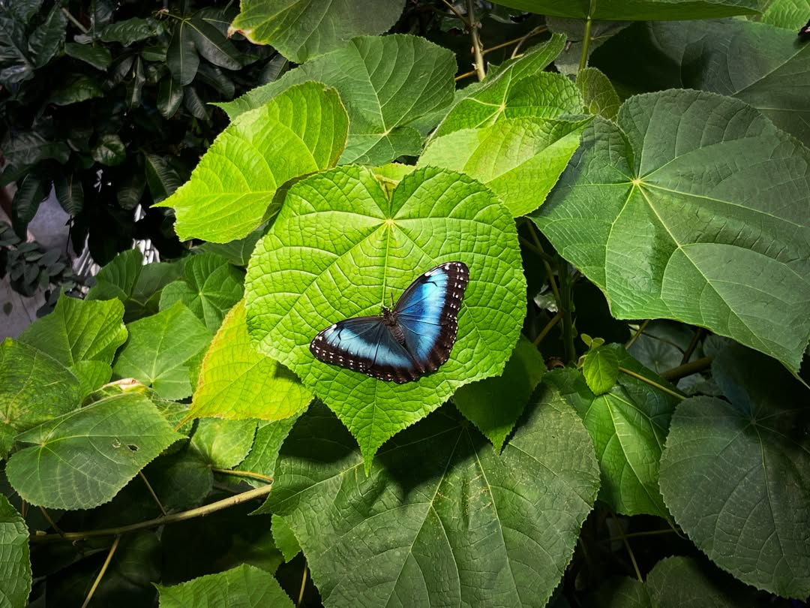

一痕冷藍
二〇二六 · 夏
午後的光穿過重重葉隙，將盈目的濃綠暈成深淺相生的青碧。斜暉沿著葉脈徐徐流移，細若游絲的紋理漸次清晰；枝影交覆，漸入幽翳，四下也悄然沉寂。風過葉間，枝梢相拂，翠影便隨之泛起微瀾，向林深次第漾去。葉聲細碎，入了林深，便漸漸不辨。春深只添新葉相倚，雨後惟留水痕未晞；四時芳信從枝畔來了又去，枝頭所留，終究仍只是一重翠意。
青碧深處，一抹冷藍自葉影間浮了出來。
翅緣近墨，細白零星；雙翼舒時，藍意由幽轉明，像遠天遺落的一痕晴，靜靜棲在闊葉之上。她起初也錯認作花，直到蝶翼微微一翕，葉上的日色也隨之游移；葉聲在枝影間洇開，那朵冷藍卻只在日色裡呼吸。
她原是來收取葉上日色的。
斜暉落在她握著相機的手背，薄薄停成一層淺金。
相機舉至眼前，腳步卻停在數步之外，惟恐衣角拂葉，或鞋底一聲輕響，便教那一點花色自枝間散盡。鏡中葉脈蜿蜒，蝶身纖薄如夢；葉影隨風微漾，惟它停得安靜，分明只是偶然棲來，枝葉卻像借了它的一雙翅翼，暫在日光裡開成一瞬花影。
快門輕響，旋即沒入葉聲。
蝶翼輕斂，那一痕晴便沉入墨影；少頃，那朵冷藍又在葉上舒瓣，細白翅紋間，一線曉色徐徐泛起。她原想再拍一張，指尖停在按鍵之上，終究未曾落下。方才那一刻既已過去，再多一次，未必仍是同一朵花。
她放下相機時，葉上已空。斜暉未改，滿林葉聲仍隨風細細相續，自枝影間流到她的身畔；待那一縷風拂過手背，方才停成淺金的日色，到了指節間，便淡作一痕近白的薄涼。
傍晚，有人翻看她所拍的照片。
那人看過滿幅青綠，又指著中央那一抹藍，隨口笑道：
「若是停在花上，想必更好看些。」
她本欲說些什麼，抬眼時，那人的指尖已滑向下一張，正是天光斜入樹影。她便只略略一笑，將相機接回手中，沒有再提。
後來，她只將那張照片留了下來。
畫面裡，葉仍是葉，蝶仍是蝶；深深淺淺的青碧間，原也尋不見半瓣花影。只是每回重看，她總記得那日午後：風聲尚輕，蝶翼未驚，葉脈間浮著一線將散未散的微明。
枝間依舊無香，滿眼仍只是一重翠意；惟在那片幽翳深處，一痕冷藍，像還未曾謝盡。